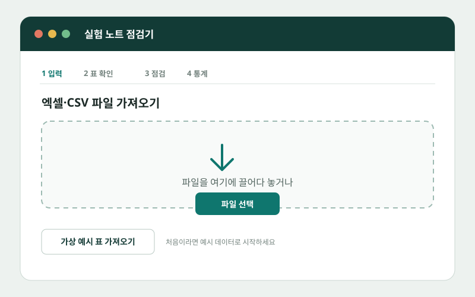
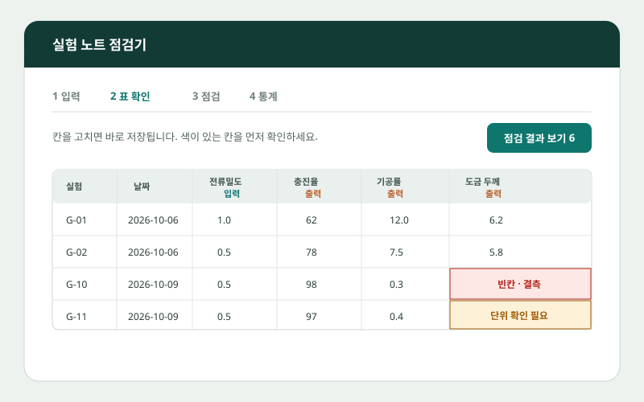
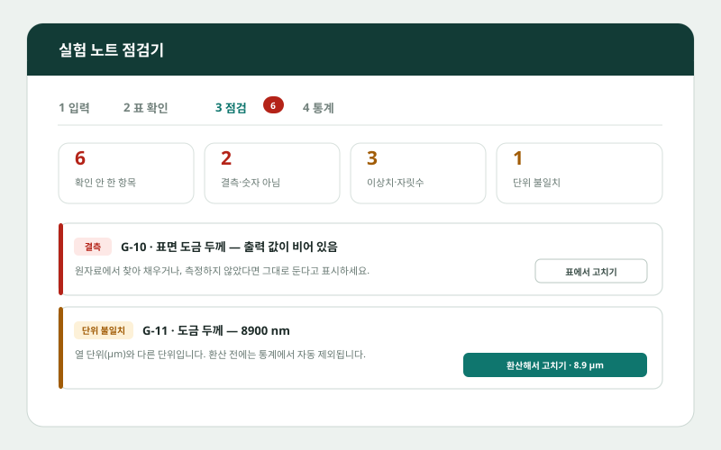
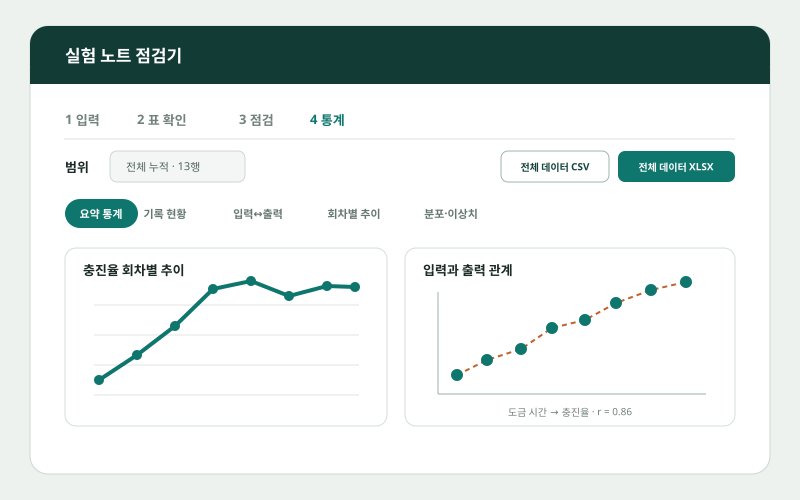

문제 해결
데이터 축적 실수 감소
실험이 반복될수록 누락된 값, 잘못 적은 단위, 숫자가 아닌 값, 다른 기록과 동떨어진 이상값이 함께 쌓일 수 있습니다. 업로드 직후 결측치·단위 불일치·이상치 후보를 찾아 원자료와 다시 확인할 위치를 보여줍니다.
Lab note checker · Project overview
실험 노트 점검기는 기록 단계의 실수를 줄이고, 새 데이터를 추가할 때마다 누적 통계를 바로 보여주며, 향후 머신러닝에 활용할 수 있는 정돈된 데이터셋을 만드는 도구입니다.
실험이 반복될수록 누락된 값, 잘못 적은 단위, 숫자가 아닌 값, 다른 기록과 동떨어진 이상값이 함께 쌓일 수 있습니다. 업로드 직후 결측치·단위 불일치·이상치 후보를 찾아 원자료와 다시 확인할 위치를 보여줍니다.
데이터를 새로 업로드할 때마다 평균·범위·분포·입출력 관계와 회차별 추이를 다시 계산해 보여줍니다. 별도의 분석 파일을 매번 만들지 않아도 현재 상태를 바로 확인할 수 있습니다.
축적된 전체 데이터를 CSV 또는 XLSX로 내려받을 수 있습니다. 데이터가 충분히 쌓이면 전처리된 기록을 바탕으로 공정 결과나 품질을 예측하는 머신러닝 모델 개발로 이어갈 수 있습니다.
사용자는 복잡한 분석 코드를 다루지 않아도 됩니다. 파일을 넣고, 표시된 문제를 확인한 뒤, 누적 결과를 살펴보고 필요한 형식으로 내려받으면 됩니다.
How to use
아래 이미지는 실제 데모 화면의 구조를 단순화한 안내 이미지입니다. 마지막 단계까지 확인한 뒤 실제 데모에서 직접 눌러볼 수 있습니다.

정해진 틀의 XLSX·CSV 파일을 선택하거나 표를 붙여 넣습니다. 반복 실험은 기존 데이터 뒤에 계속 누적됩니다.

가져온 열과 단위를 표준 항목에 맞추고, 각 값을 한 표에서 확인합니다. 셀을 직접 수정하거나 새 행을 추가할 수 있으며 변경 내용은 즉시 반영됩니다.

결측치, 숫자 형식 오류, 단위 불일치, 이상치 후보를 항목별로 보여줍니다. 원자료를 확인해 고치거나, 의도한 값이면 그대로 유지하고 통계 포함 여부를 결정합니다.

데이터가 추가될 때마다 요약 통계, 결측 현황, 입력과 출력의 관계, 회차별 추이와 분포가 갱신됩니다. 전체 데이터는 CSV와 XLSX로 내려받을 수 있습니다.
Next possibility
일관된 입력 조건과 출력 결과가 충분히 쌓이면 공정 결과 예측, 품질 이상 조기 탐지, 다음 실험 조건 추천과 같은 머신러닝 과제로 확장할 수 있습니다.
Try the interactive demo
가상 예시 데이터를 불러오면 실제 데이터를 올리지 않고도 표 확인, 오류 점검, 통계 시각화와 다운로드 흐름을 체험할 수 있습니다.
실험 노트 점검기 실행 ↗